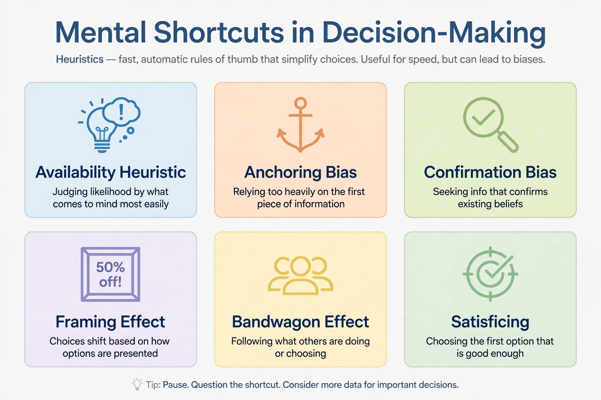

Heuristics in judgment and decision-making

In psychology, heuristics are mental shortcuts that ease the cognitive load of making decisions and judgments under uncertainty. The research programme on heuristics and biases, launched by Amos Tversky and Daniel Kahneman in the 1970s, showed that people rely on a small number of general-purpose heuristics — principally representativeness, availability, and anchoring and adjustment — and that while these are usually effective, they give rise to systematic and predictable errors called cognitive biases.
Main heuristics
Representativeness
Judging probability by similarity to a prototype. In the famous "Linda problem", most respondents judge it more probable that Linda is a bank teller and active in the feminist movement than that she is a bank teller — a conjunction fallacy, since a conjunction cannot be more probable than one of its components. Representativeness also produces base-rate neglect (ignoring prior frequencies) and insensitivity to sample size, such as expecting short sequences of coin tosses to look random.
Availability
Judging frequency or probability by the ease with which examples come to mind. People rate deaths by dramatic causes (tornadoes, homicide) as more common than statistically more frequent but undramatic causes (asthma, diabetes), because vivid instances are more retrievable. Ease of recall is influenced by recency, salience, and media coverage.
Anchoring and adjustment
Estimates are pulled toward an initial value or "anchor", even an arbitrary one, with adjustment from it typically insufficient. In one classic experiment, a rigged wheel of fortune landing on 10 or 65 shifted participants' median estimates of the percentage of African nations in the UN by large margins.
Other heuristics
Subsequent research added the affect heuristic (judgments guided by feelings of good or bad), processing fluency, the simulation heuristic (judging likelihood by how easily a scenario can be imagined), and the recognition heuristic studied by Gerd Gigerenzer, whose "fast and frugal" programme emphasises that heuristics can be ecologically rational in the environments where they are used.
Impact
The heuristics-and-biases programme reshaped psychology, economics, and law: it underpinned Kahneman's 2002 Nobel Prize in Economic Sciences (Tversky having died in 1996) and the field of behavioural economics, and its catalogue of effects is summarised for general readers in Kahneman's Thinking, Fast and Slow (2011). Critics have questioned the generality of some laboratory effects and the programme's emphasis on error, prompting a long-running "heuristics debate" with ecological-rationality researchers; nonetheless the core findings — representativeness, availability, and anchoring — remain among the most replicated results in judgment research.
See also: Cognitive bias · Thinking, Fast and Slow · Daniel Kahneman · Behavioral economics